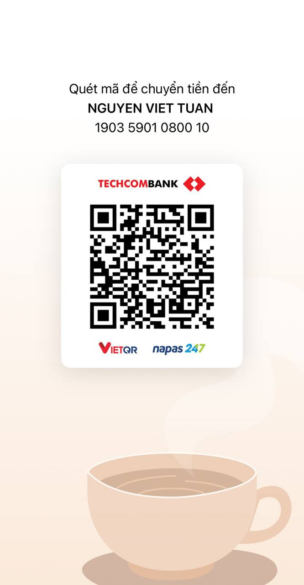

Ủng hộ tác giả
Vì sao có trang này?
ChupMark là ứng dụng chụp, chú thích và quay màn hình miễn phí cho Windows, chạy hoàn toàn offline: không quảng cáo, không theo dõi, không thu thập dữ liệu, không tài khoản. Ứng dụng do một nhà phát triển cá nhân làm và duy trì. Nếu ChupMark giúp ích cho bạn, một khoản ủng hộ nhỏ giúp tác giả có thêm thời gian sửa lỗi, cập nhật và cải thiện ứng dụng. Không ủng hộ cũng hoàn toàn không sao: bạn vẫn dùng đầy đủ mọi tính năng.
Trong nước: VietQR
Quét mã bằng app ngân hàng, MoMo hoặc ZaloPay; nội dung gợi ý: Ung ho ChupMark.

- Ngân hàng
- Techcombank
- Chủ tài khoản
- NGUYEN VIET TUAN (Nick Nguyen)
- Số tài khoản
- 1903 5901 0800 10
- Nội dung
- Ung ho ChupMark
Quốc tế: Ko-fi
Nếu bạn ở ngoài Việt Nam, bạn có thể ủng hộ qua Ko-fi. Thanh toán do Ko-fi xử lý và được chuyển tới tác giả qua PayPal, theo điều khoản và chính sách quyền riêng tư của Ko-fi và PayPal.
Lưu ý
- Ủng hộ hoàn toàn tự nguyện. ChupMark vẫn miễn phí và đầy đủ tính năng dù bạn có ủng hộ hay không; ứng dụng không bao giờ nhắc bạn ủng hộ.
- Ủng hộ không mở khóa gì thêm: không tính năng, không huy hiệu, không giao diện riêng, không nội dung số nào được trao đổi.
- Đây không phải hoạt động từ thiện hay quyên góp cho tổ chức nào. Tiền được gửi tới tác giả cá nhân Nick Nguyen, không phải Microsoft; Microsoft không tham gia vào khoản ủng hộ này.
- Khoản ủng hộ không được khấu trừ thuế.
- Bản thân ứng dụng ChupMark không kết nối Internet: nút “Ủng hộ ChupMark” trong trang Giới thiệu chỉ mở trang này trong trình duyệt. Trang này không dùng script, cookie hay công cụ theo dõi.
Liên hệ
Câu hỏi: imucyou@gmail.com · Chính sách quyền riêng tư của ChupMark
Support the developer
Why this page?
ChupMark is a free screenshot, annotation and screen recording app for Windows that works fully offline: no ads, no tracking, no data collection, no account. It is made and maintained by an individual developer. If ChupMark is useful to you, a small contribution gives the developer more time to fix bugs, ship updates and improve the app. Not supporting is perfectly fine too: you keep every feature.
In Vietnam: VietQR
Scan the code with a Vietnamese banking app, MoMo or ZaloPay; suggested transfer message:
Ung ho ChupMark.
- Bank
- Techcombank
- Account name
- NGUYEN VIET TUAN (Nick Nguyen)
- Account number
- 1903 5901 0800 10
- Message
- Ung ho ChupMark
International: Ko-fi
Outside Vietnam you can support ChupMark on Ko-fi. Payments are processed by Ko-fi and paid out to the developer via PayPal, under the terms and privacy policies of Ko-fi and PayPal.
Please note
- Support is entirely voluntary. ChupMark stays free and fully featured whether or not you contribute, and the app never asks you to.
- Support unlocks nothing: no features, no badges, no themes, no digital goods in return.
- This is not a charity and not a donation to an organisation. The money goes to the individual developer, Nick Nguyen, not to Microsoft; Microsoft is not involved in it.
- Contributions are not tax-deductible.
- The ChupMark app itself never connects to the internet: the “Support ChupMark” button on its About page only opens this page in your browser. This page uses no scripts, cookies or trackers.
Contact
Questions: imucyou@gmail.com · ChupMark privacy policy